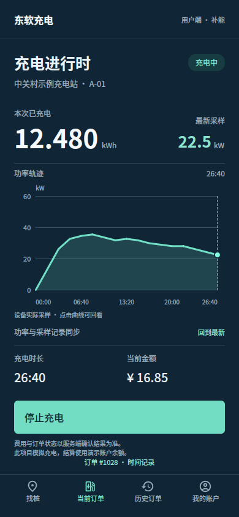
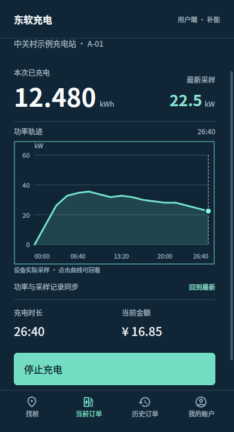
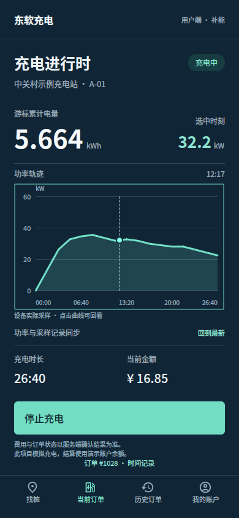
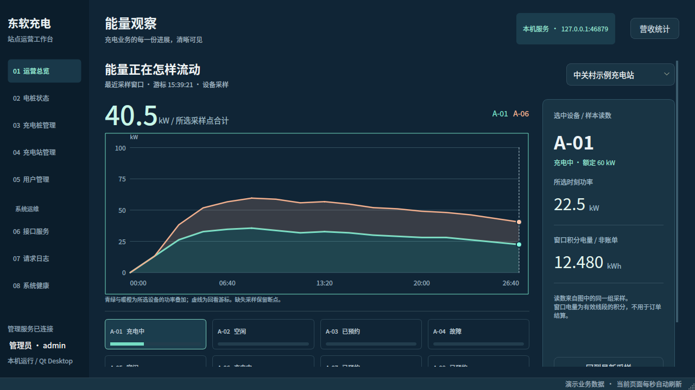
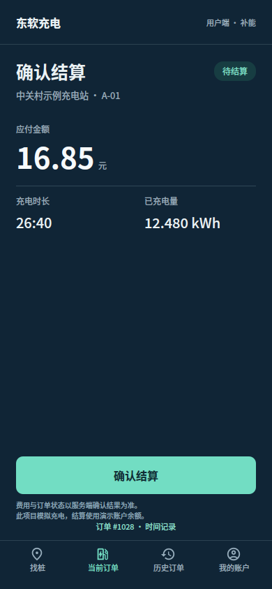

方案 2 原稿 · 45%
原生 Qt · 45%

左侧为已选 HTML 原稿，右侧为 Qt 自动化测试实际截屏。使用同一组 17 点样本，测试数据仅进入测试进程，不写入正式数据库。
手机 390 × 844；管理端 1360 × 860。可滚动查看，原稿内的演示按钮不控制 Qt。
打开保留的原设计稿 · 管理端 · 其他状态 · 新增模拟器与其他管理页实拍

有意保留的业务差异：正式版显示实际服务状态、站点筛选、营收统计切换；采样缺失显示“—”。用户端金额和总电量以订单为准；管理端窗口积分明确标注“非账单”。图表可以拖动，也支持左右方向键和 End 回到最新。



